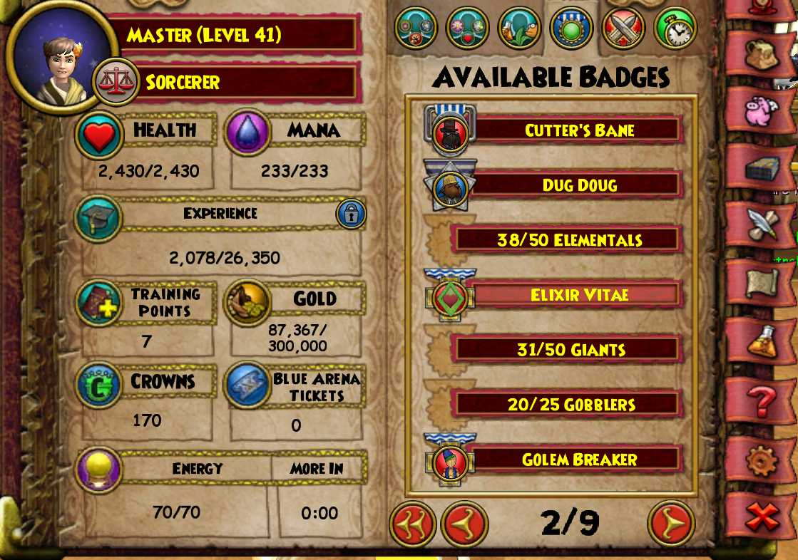
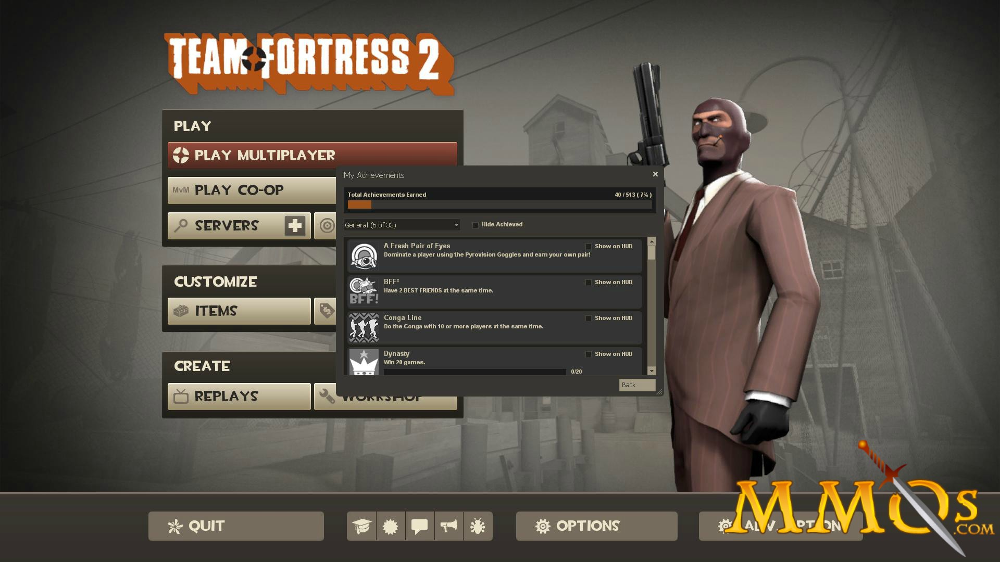
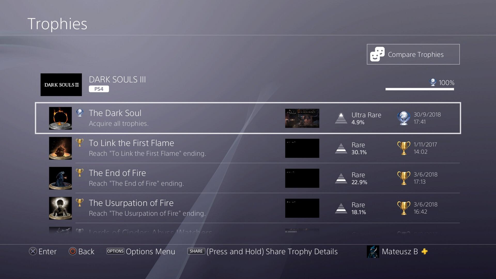

Stamps
June 21, 2026 | 8:04 PM ET
Wizard101 was a game I played a lot back in middle school. It's an open-world MMO where the player takes on quests to fight monsters in turn-based combat. The number of quests and worlds for the player to explore gave them plenty of things to do, and one of these things was the badge system shown below:

There are 1463 badges in total as of the time of writing this article, which is pretty huge. They span things like defeating 100 ghosts in a certain location, to accomplishing all the quests in a given world, to finding all optional books scattered across all worlds, etc. Arguably, the sheer size of them means the average player isn't going to be striving to collect a given badge, since the possibility of collecting all badges is functionally impossible. Regardless, it was enjoyable for me to flip through the pages, see which badges I'm close to completing, and take a small detour to put in the extra 20 minutes it takes to finish the badge off.
Plenty of other games have their own achievement systems. The Team Fortress 2 and Playstation 4 Dark Souls 3 trophy menus are shown below:


If you've ever tried to get these achievements, they're wholly unreasonable for a normal person to get 100% of. In particular, I remember grinding the Dark Souls 3 Dancer of the Boreal Valley boss in high school for a particular achievement for about 4 hours, giving up on the task after a certain point due to a lack of interest. Although, these achievements were nonetheless enjoyable to pursue, and they would extend the playtime of the game way beyond what I would have put into them otherwise if they didn't exist.
Each of these cases demonstrate the ability of achievements to encourage and extend the motivation of a player. When a player lacks motivation to continue, they give up on their task and move on to something else. This "something else" can be another game entirely, or it can be playing the same game with an undirected play-style (for example, I remember playing Destiny 1 in high school and just jumping around the lobby, not really doing any of the quests or progressing in the main storyline). The introduction of tangible, permanent (tied to the player account, world, etc.) achievements is a powerful---but ultimately cheap---motivator. No functionality needs to be tied to the achievements beyond adding an indication to some menu that it was "obtained," and the mere presence of the achievement is enough to encourage the player to dedicate more mental effort into thinking about the game.
To these ends, I was wondering if I could apply this to my real life. I don't really play any video games nowadays (not necessarily for good reasons, the idea of not doing something "productive"---whatever that term may mean to me at the time---gives me more anxiety than enjoyment), but I still feel an itch to play a video game if only for the sense of resource collection, clear indications of improvement, and achievements. Every now and then I'll search a game online just to click through their achievement lists. I fantasize about playing Minecraft or Death Stranding not for the actual enjoyment of the game but for the dopamine rush that arrives when a bell is played and the top-right of the screen flashes "Achievement obtained" for five seconds. If I could apply this same simple stimuli to things that I currently assign value to, like my job and lifestyle, then I could reap the benefits of improved happiness and productivity without putting much effort into it.
To these ends, I've created the stampbook. This combines the Early Web look-and-feel that I enjoy in the form of 100x65-pixel badges with cute borders and gifs, with automated hooks connected with the rest of my daily TODO lists and stat logs. The objective of this is to create a collection of badges ahead of time which represent things I find valuable, then add their completion status to my daily TODO lists for me to strive towards. After completing all acquisition conditions, I get to "acquire" it and add it to the stampbook. Here are some things I'm making stamps out of:
- Read a paper every day for 7 days. (Resets every 7 days, re-acquirable.)
- Cook a food from a culture belonging to a given country (e.g., different badges for different cultures/countries).
- Plant/garden something.
- Publish a paper/submit a patent.
- Fold 100 origami cranes. (I'm still doing this, currently on crane 231..!)
- Etc.
Importantly, these are connected to other hooks on my computer. When I add a paper to my paper log, it may trigger the paper-reading stamp to be collected and automatically added to the webpage. Everything is represented programmatically in various Python and JSON files, so it's easy to extend and invoke. Each badge is represented with a different "importance" in the form of a rarity indication that influences its color, border style, and animation, which visually distinguishes the sparse big-tasks from the frequent small-tasks.
Ultimately, I think this will be a helpful tool for motivating myself to accomplish the things I view as important. I can see myself striving to do something I otherwise wouldn't, just for the benefit of attaining this virtual badge to display on my profile. I'm excited to add more badges, and am looking forward to collecting them. We'll see how much I keep up with it!